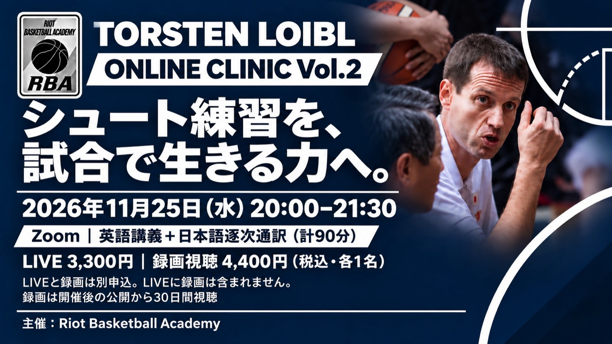

シュート練習を「試合で生み出す力」へ —— トーステン・ロイブル氏のオンライン講習を11月25日に開催
育成年代のバスケットボール指導を学ぶオンライン講習「Torsten Loibl ONLINE CLINIC Vol.2」が、11月25日（水）20:00〜21:30（日本時間）にZoomで開かれる。主催はRiot Basketball Academy（RBA）。テーマは、育成年代を含む指導現場でのシューター育成と、現代バスケットボールにおけるシューターの活かし方。講義は英語で行われ、日本語の逐次通訳を含む90分となる。

シュートを「打つ技術」から「試合で生み出す力」へ
講習が掲げるのは、シュートを「打つ技術」から「試合で生み出す力」へ、というテーマだ。シュートのフォームだけでなく、練習の組み立て方や、ボールを持っていない時の動き、スペーシング、試合の中での判断までを扱う。
公式ページで案内されている講義内容は次の3つ。
- 01：現代のシューターに必要な技術
- 02：練習から試合の判断につなげる設計
- 03：良いシュートを生むスペーシングと戦術
指導の現場で、日々の練習メニューを考える時のヒントにしやすい内容になっている。
講師はトーステン・ロイブル氏
講師を務めるのは、トーステン・ロイブル（Torsten Loibl）氏。公式ページによると、2026-27シーズンはレバンガ北海道（B.PREMIER）のヘッドコーチを務める。これまでに男子U16・U18・U19日本代表のヘッドコーチ、2019年に3x3女子U23日本代表が世界一になった際のディレクターコーチなどを歴任してきた。
なお主催者によると、講師の所属・認定・実績は経歴として紹介しているもので、この講習はFIBA、WABC、所属クラブなどが公認・後援するものではない。RBAの独立主催となる。
参加方法
参加はLIVEと録画視聴の2つのプランから選ぶ。LIVEと録画視聴は別の申込で、LIVE参加に録画視聴は含まれない。
- LIVE参加：3,300円（税込）
- 録画視聴：4,400円（税込・開催後、公開から30日間視聴できる）
申し込みは公式ページのフォームから。国内からの申し込みは、フォーム送信後に表示されるSquare決済で支払いを済ませると確定する。料金・申込方法・キャンセルや返金などの条件は、公式ページの案内が優先される。
海外から参加する指導者向けには、英語の案内ページとUSD建ての申込も用意されている。海外向けはLIVE・録画視聴がそれぞれUS$29の別購入となる。
開催概要
- 講習名：Torsten Loibl ONLINE CLINIC Vol.2（RBA ONLINE CLINIC VOL.2）
- 日時：2026年11月25日（水）20:00〜21:30（日本時間）
- 形式：Zoomによるオンライン講習（英語講義と日本語逐次通訳を含む90分）
- 講師：トーステン・ロイブル（Torsten Loibl）氏
- 参加費（国内）：LIVE 3,300円（税込）／録画視聴 4,400円（税込・30日間）※別申込。LIVEに録画視聴は含まれない
- 参加費（海外）：LIVE US$29／録画視聴 US$29（それぞれ別購入）
- 主催：Riot Basketball Academy（RBA）
- 公式ページ（国内）：https://riotbasketballacademy.com/ja/events/torsten-loibl-online-clinic
- 公式ページ（海外向け・英語）：https://riotbasketballacademy.com/events/torsten-loibl-online-clinic
出典: Riot Basketball Academy 提供資料（2026年11月）／同 公式講習ページ（国内・英語）